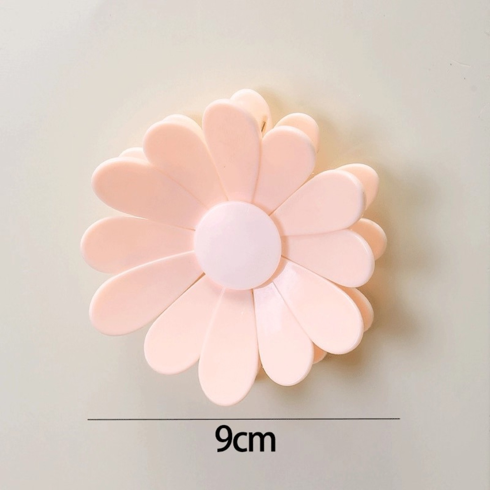

Teardown 13 / 17
花朵造型密封封口夹

用户
居家人群，零食、茶叶、干货爱好者，喜欢可爱文创家居小物件
场景
零食袋、茶叶袋、食品保鲜袋开封后封口，防止受潮变质；同时可作为桌面装饰摆件
当前方案痛点
普通封口夹造型单调冰冷；容易弄丢，用完随手乱放；功能性强，但缺少美感，摆在桌面不好看
创意方案
把封口夹设计成一朵小花，花瓣是独立夹子；中心旋钮拧紧，花瓣就向内收拢，夹紧塑料袋。既是食品封口工具，也是可爱花朵装饰
核心价值
将收纳工具与装饰摆件二合一；保留夹紧密封的基础功能，用花朵造型提升颜值，用完摆在台面，不再是单纯不起眼工具
方案短板与边界
花瓣较多，缝隙容易积灰；相比长条封口夹，夹紧力度偏弱；结构零件多，更容易损坏；价格高于普通封口夹
底层设计思想
基础工具不只是满足实用，把实用功能包装成装饰品；一件物品同时承担功能用途+美学摆件两个角色
同思想延伸案例
- 动物造型书签，兼具书签+桌面小摆件
- 仙人掌造型回形针收纳，收纳工具同时做装饰
- 小鸟造型剪刀，文具自带装饰属性
AI 机会迁移
基础刚需工具，增加美学价值；产品完成本职功能之外，赋予展示属性，让用户愿意放在显眼位置，减少收纳丢失问题